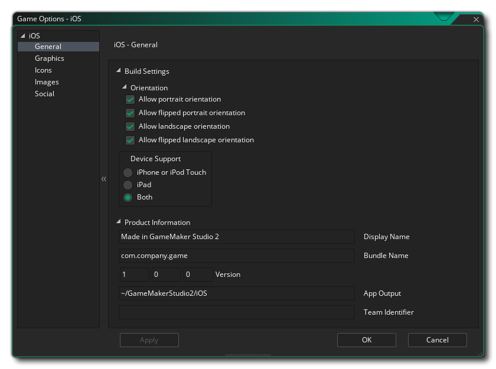

Cette section présente les différentes options disponibles qui contrôlent la compilation de vos projets de jeux iOS. Les différentes sections sont:

La première chose à faire est de remplir les informations sur le produit concernant votre jeu, y compris son nom d'affichage, son identifiant de lot et les informations de version. Notez que l' ID de l'ensemble doit être dans le bon format d'URL inverse pour que la version finale du jeu fonctionne correctement, par exemple: com.[Company].[GameName]
La deuxième partie de la section Général couvre les paramètres de construction, avec les options suivantes disponibles pour définir le type de périphérique à cibler:
- iPhone ou iPod Touch: iPhone 4 et plus ou iPod Touch
- iPad: appareils iPad
- Les deux: iPhone / iPod et iPad
Vous pouvez ensuite sélectionner le dossier de sortie de l' application pour le jeu, puis les différentes orientations que votre jeu peut être exécuté pour la meilleure expérience utilisateur. Les options disponibles sont:
- Portrait
- Portrait renversé
- Paysage
- Paysage renversé
Ici, vous pouvez modifier les détails suivants relatifs à l'affichage de votre jeu, avec les options suivantes disponibles:
- Interpoler les couleurs entre les pixels: Active l'interpolation, qui "lisse" les pixels. pour les graphismes en pixels nets, il devrait être désactivé, mais si vous avez de beaux dégradés alpha et des graphismes lissés, il vaut mieux le laisser sur. La valeur par défaut est désactivée.
- Half iPad 1 Textures: L'iPad 1 a beaucoup moins de mémoire de texture que les appareils plus récents, donc vous pouvez activer cette option pour réduire la taille des textures de moitié si vous voulez cibler cet appareil ou obtenir une compatibilité maximale.
- Mise à l'échelle: votre jeu peut être configuré pour redimensionner automatiquement le canevas de dessin afin de conserver les proportions dans le navigateur, ou vous pouvez choisir de l'étirer pour l'adapter. L'option Ajuster pour ne pas afficher le jeu en plein écran dans le navigateur, mais plutôt étirer ce qui est dessiné pour s'adapter à la taille de la toile, tel que défini par la première pièce du jeu.
Enfin, il y a la possibilité de définir la taille de la page Texture. La taille par défaut (et la plus compatible) est 2048x2048, mais vous pouvez choisir n'importe où entre 256x256 jusqu'à 4096x4096. Il y a aussi un bouton marqué Aperçu qui va générer les pages de texture pour cette plate-forme, puis ouvrir une fenêtre afin que vous puissiez voir à quoi ils ressemblent. Cela peut être très utile si vous souhaitez voir comment les pages de texture sont structurées et éviter d'avoir des pages de texture plus grandes (ou plus petites) que nécessaire.
NOTE: Soyez conscient que plus la taille de la page de texture est grande, moins votre jeu sera compatible.
Cette section vous permet d'ajouter les différentes icônes requises par les différents appareils et les différentes parties de l'App Store iOS. Ces icônes doivent être créées en tant que 24bit .png images à la taille spécifiée pour chacun.
Il est à noter que GameMaker Studio 2 dispose d'un outil Project Image Generator qui peut être utilisé pour créer automatiquement toutes les icônes requises pour toutes les différentes plates-formes cibles pour lesquelles votre jeu est compilé. Si vous utilisez cet outil, vous devez réviser les images créées pour vous assurer qu'elles correspondent à vos besoins.
Cette section vous permet d'ajouter des graphiques distincts en tant qu'écrans de démarrage (l'image qui s'affichera brièvement pendant le chargement de votre application) pour chacun des différents périphériques cibles iOS. Ces images doivent être créées en tant qu'images individuelles 24 bits *.png sans transparents et à la taille correcte pour chacun des dispositifs et orientations requis. Vous pouvez également définir une durée minimum pour afficher les écrans de démarrage dans le menu déroulant situé en bas (de 0 à 10 secondes).
Il est à noter que GameMaker Studio 2 dispose d'un outil Project Image Generator qui peut être utilisé pour créer automatiquement toutes les images requises pour les différentes plates-formes cibles sur lesquelles votre jeu est compilé. Si vous utilisez cet outil, vous devez réviser les images créées pour vous assurer qu'elles correspondent à vos besoins.
Cette section est pour activer différentes fonctionnalités sociales dans votre jeu Android. Les options suivantes peuvent être choisies:
- Facebook: Si vous avez besoin des fonctions Facebook, vous devez cocher cette case, puis indiquer l' identifiant de l' application Facebook et le nom de l'application Facebook. Notez que toutes les fonctionnalités de Facebook sont accessibles via une extension, et lorsque vous cochez la case Utiliser Facebook, vous serez invité à télécharger et à installer l'extension Facebook sur le Marketplace.
- Activer les notifications Push: pour que votre jeu utilise les notifications Push, elles doivent d'abord être activées ici, sinon elles ne fonctionneront pas. Les notifications locales sur Android ne requièrent pas le "GCM Sender ID", mais vous devez l'ajouter si vous souhaitez créer des notifications à distance.